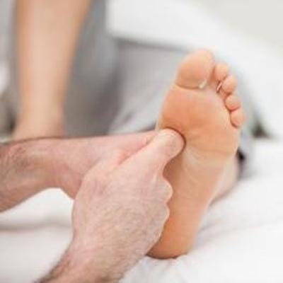

Foot/Ankle
- Plantar Fasciitis
- Ankle Sprains/Strains
- Anterior & Posterior Shin Splints
- Posterior Tibialis Insufficiency
- Tendonitis
- Running Injuries
- Heel Spurs
- Stress Fractures
- Hallux Rigidus
- Neuromas
- Tarsal Tunnel Syndrome
- Bunions/Hallux Valgus
- Hallux Rigidus